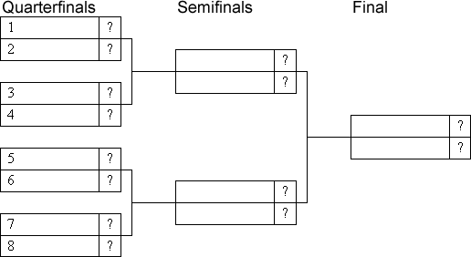

In a school football tournament, 8 teams participate, each of which plays equally well in football. Each game ends with the victory of one of the teams. A randomly chosen by a draw number determines the position of the teams in the table:

What is the probability that teams A and B:
a$)$ will meet in the semifinals;
b$)$ will meet in the finals.
a$)$ In order to meet in the semifinals, the teams must fall into different subgroups $($event X$)$ that converge to one semifinal. Team A can be in any subgroup. In order for Team B to meet A in the semi-final, it must be in the adjacent subgroup. The probability of this is 2/7. Then both A and B must win their matches $($event Y$)$. Since the teams play football equally well, the probability of winning in the subgroup is ½, and the teams A and B winning their matches are independent events, hence P$($Y$)$ = ½ x 1/2 = ¼. Since the events X and Y are independent, the required probability is P $($X$)$ \times P$($Y$)$ = $2/7 \times 1/4$ = 1/14.
b$)$ In order to meet in the final, team B needs to get into the half of the table that the team A was not in. Accordingly, P$($X$)$ = 2/7. In addition, each team needs to win two matches. P$($Y$)$ = $($½$)$^4$ = 1/16. The required probability is P$($X$)$ \times P$($Y$)$ = $4/7 \times 1/16$ = 1/28.
a$)$ 1/14; b$)$ 1/28.